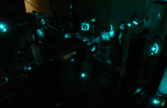

|
I am an Alfred E. Mann Doctoral Fellow at the University of Southern California Translational Imaging Center, working with Scott E. Fraser and Thai V. Truong in biophysics and optics. I received a BS from Loyola Marymount University in 2012, worked as a validation engineer at Unbound Consulting from 2012-14, and earned a MS from USC in 2015. I joined the USC Translational Imaging Center as a PhD student in 2016. email / Twitter / Google Scholar / GitHub |
 |
|
I develop new optical tools with an eye toward understanding physical principles that govern biological function. Much of my work has focused on quantitative imaging and lately I've been building light-sheet and light-field microscopes to image biological phenomena at a wide range of scales, from the dynamics of individual bacterial cells to memory/learning in the brains of animals. In the past, I did research in single-molecule biophysics and super-resolution microscopy. |

|
A Calrsson, P Kuhn, M Luttgen, K Keomanee-Dizon, P Troncoso, P Corn, A Kolatkar, JB Hicks, CJ Logothetis, AJ Zurita Clinical Cancer Research 23.7, 1722-1732 (2017) Nature Reviews Urology Research Highlight Circulating tumor cells (CTCs) provide a window into the hematogenous, or "fluid phase," of cancer, underlying the metastatic transition in which a locally contained tumor spreads to other locations in the body through the bloodstream. We simultaneously characteized tumor cells in the fluid phase and bone metastases of prostate cancer patients, and reveal new insights into their biophysical properties and clinical significance in advanced disease. |

|
H Zhan, R Stanciauskas, C Stigloher, K Keomanee-Dizon, M Jospin, JL Bessereau, F Pinaud Nature Communications 5, 4974 (2014) Nature Method's Methods in Brief / Biophotonics Research Highlight We use complementation-activated light microscopy to localize indivdual molecules and track their Brownian diffusion with a precision of 30 nm, directly in live animals. We show that dystrophin, a key protein in muscular dystrophy, modulates calcium channel organization and dynamics during muscle activity. |
| |